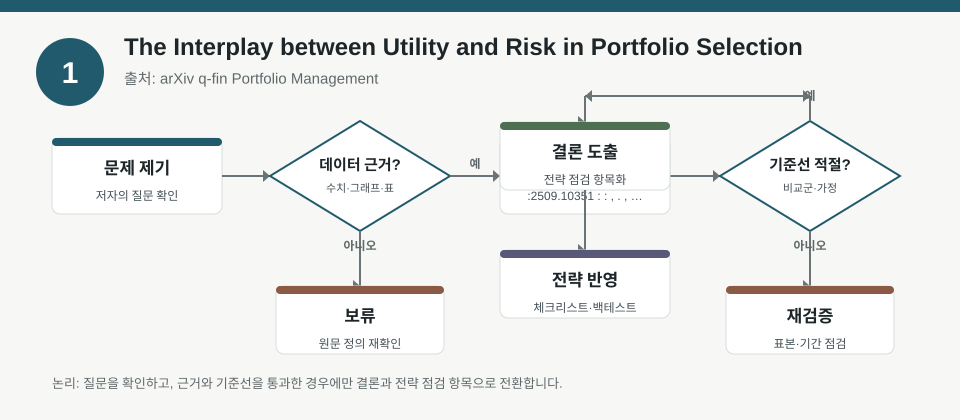
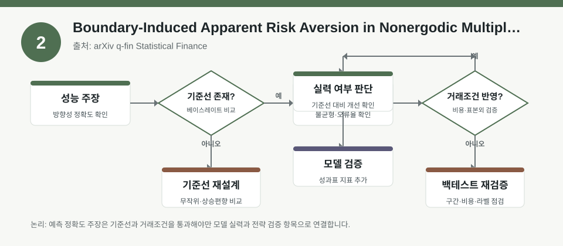
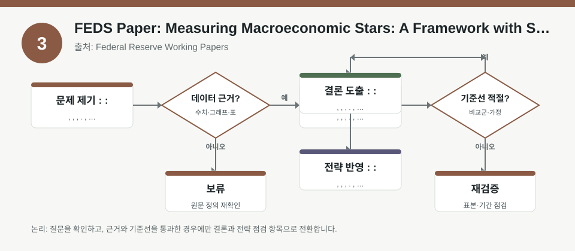

핵심 요약
- 결론: 이번 자료들은 “수익률 예측”보다 “가정 점검”에 더 가깝고, 포트폴리오 제약·비정상 성장·잠재성장률 추정이 리스크 해석을 어떻게 바꾸는지 보여줍니다.
- 원칙: 숫자와 결론은 메타데이터에 없는 경우 사실로 쓰지 말고, KOSPI/KOSDAQ 비중·환율 민감도·금리·인플레이션·변동성·신용/규제 리스크 관점의 점검 항목으로 읽어야 합니다.
주목할 자료
| 번호 | 자료 | 출처 | 원문 | 핵심 내용 | 데이터 포인트 | 리스크/한계 |
|---|---|---|---|---|---|---|
| 1 | The Interplay between Utility and Risk in Portfolio Selection | arXiv q-fin Portfolio Management | 원문 보기 | 효용과 위험제약을 함께 두는 포트폴리오 선택을 일반화해, 비볼록·비오목 효용까지 포함한 해석 틀을 제시합니다. | 위험제약, 효용함수 형태, 포트폴리오 구성 규칙의 민감도 점검 | 구체적 성능 수치와 적용 구간은 메타데이터에 없으므로 본문 수치 확인이 필요합니다. |
| 2 | Boundary-Induced Apparent Risk Aversion in Nonergodic Multiplicative Growth | arXiv q-fin Statistical Finance | 원문 보기 | 흡수 경계와 비에르고딕 성장 구조가 관측상 위험회피처럼 보이는 현상을 만들 수 있음을 다룹니다. | 하한 경계, 고정 익스포저, 경로 종속 손실 가능성 | 단일 기간 기대값보다 경로 생존성이 중요하므로 백테스트 해석 시 경계 조건 확인이 필요합니다. |
| 3 | FEDS Paper: Measuring Macroeconomic Stars: A Framework with Scarring Effects | Federal Reserve Working Papers | 원문 보기 | 잠재성장률과 자연실업률을 추정할 때 경기 충격의 흉터효과를 반영하는 틀을 제안합니다. | 잠재 GDP, 자연실업률, 추세-순환 분해, 스캐링 반영 | 추세 추정은 모델 의존적이므로 한국 경기 해석에 그대로 이식하기 전 변수 정의를 확인해야 합니다. |
자료별 상세
1. The Interplay between Utility and Risk in Portfolio Selection

- 핵심: 효용 극대화와 위험 제약을 분리하지 않고 함께 다루면, 같은 자산 조합도 제약식에 따라 전혀 다른 선택이 될 수 있습니다.
- 데이터 포인트: 비볼록 효용, 비오목 효용, 위험함수형의 선택이 결과를 좌우하므로 팩터 노출과 리밸런싱 규칙을 함께 점검해야 합니다.
- 리스크: 메타데이터만으로는 어떤 위험척도와 어떤 제약 조건이 사용됐는지 확정할 수 없어서 재현 시 조건 확인이 필요합니다.
- 투자전략 반영 예시: KOSPI 대형주와 KOSDAQ 성장주를 섞는 경우, 환율·금리 민감 업종의 한도와 변동성 상한을 체크리스트로 분리해 기록합니다.
- 실행 예시: 백테스트 전용 점검표에 “섹터 익스포저, 최대낙폭 허용치, 환율 민감도, 금리 민감도” 항목을 넣고 동일 자산군의 제약 전후 성과를 비교합니다.
2. Boundary-Induced Apparent Risk Aversion in Nonergodic Multiplicative Growth

- 핵심: 경로가 특정 하한에 닿으면 시스템이 멈추는 구조에서는, 평균 수익이 아니라 생존 가능한 경로를 우선하는 행동이 관측될 수 있습니다.
- 데이터 포인트: 고정 익스포저와 흡수 경계가 있는 설정은 손실 꼬리와 생존 확률을 함께 봐야 한다는 점을 시사합니다.
- 리스크: 표준 성장최적화와 달리 비에르고딕성 때문에 기대값 기반 해석이 왜곡될 수 있어 백테스트의 종료 규칙을 반드시 확인해야 합니다.
- 투자전략 반영 예시: KOSDAQ 고변동 종목이나 레버리지 성격 익스포저를 볼 때, 일시적 손실이 누적 생존성에 미치는 영향을 별도 점검합니다.
- 실행 예시: 시뮬레이션에서 “손실 임계치 도달 시 강제 청산” 규칙을 넣고, 평균수익률 대신 생존률·최대낙폭·경로별 회복기간을 기록합니다.
3. FEDS Paper: Measuring Macroeconomic Stars: A Framework with Scarring Effects

- 핵심: 잠재성장률과 자연실업률은 단순 추세가 아니라 경기 충격의 후유효과까지 반영해야 더 현실적인 해석이 가능하다는 문제의식을 담고 있습니다.
- 데이터 포인트: 추세-순환 분해는 금리, 고용, 생산성, 경기침체 이후 회복 속도 같은 거시 변수 정의에 크게 의존합니다.
- 리스크: 미국 중심 추정틀이므로 한국에 적용할 때는 산업구조, 수출 비중, 인구구조, 정책반응 차이를 별도로 검증해야 합니다.
- 투자전략 반영 예시: KOSPI 업종별로 금리 민감 업종, 내수 업종, 수출주를 나눠 잠재성장 둔화와 환율 변동이 실적 가정에 미치는 영향을 체크합니다.
- 실행 예시: 분기별 점검표에 “실질금리, 물가상승률, 고용, 원달러 환율, 신용스프레드”를 넣고 추세 추정치가 바뀔 때 섹터 비중 가정도 함께 갱신합니다.
팩터·리스크·포트폴리오 관점
- 핵심: 세 자료 모두 공통적으로 “모형의 수익률”보다 “가정의 구조”가 결과를 좌우하므로, 팩터 노출과 리스크 제약, 경로 종속성, 거시 추세 추정을 함께 봐야 합니다.
- 검수: 메타데이터에 구체 수치·표본구간·추정식이 없으므로, 백테스트 재현 전에는 샘플 기간, 손실 경계, 위험함수, 추세추정 방법을 확인해야 합니다.
정리
- 결론: 이번 묶음의 핵심은 예측 신호를 찾는 것이 아니라, 포트폴리오와 거시 해석에서 어떤 가정을 믿고 있는지 드러내는 데 있습니다.
- 다음 확인: 각 원문에서 위험척도 정의, 샘플 구간, 경계조건, 미국 추정틀의 한국 적용 가능성을 먼저 검증해야 합니다.